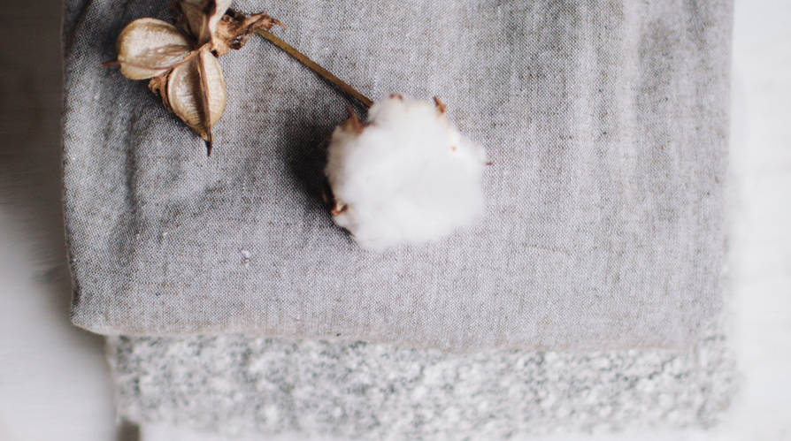
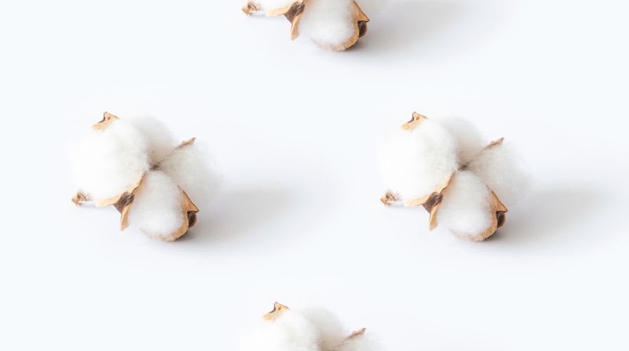

Our Mission
In order to realize a sustainable society that takes the environment and human rights into consideration.
View more
What Brand and Consumers need to know
We are working to increase 1% organic cotton by Pre Organic Cotton.
View more
